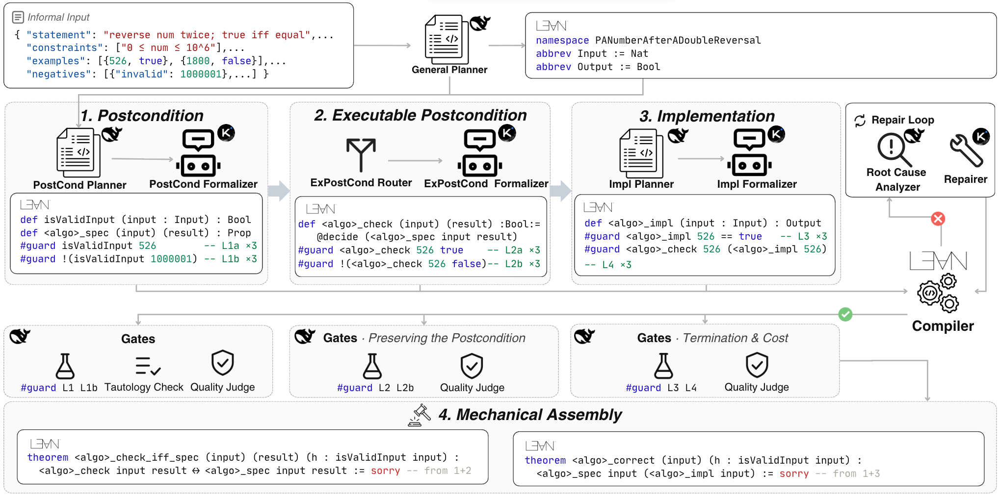

Builds a Lean framework pairing declarative postconditions with executable Bool checks proved equivalent, and trains LLMs to autoformalize Lean program specifications using execution-based RL rewards.
Abstract
Formal specifications define intended program behavior and underpin verification, but writing them in theorem provers such as Lean is slow and expertise-intensive, making specification a major bottleneck to scaling formally correct code. Autoformalization from natural-language problems is promising, yet training specification models requires scalable feedback on whether generated specifications capture intended behavior. Prior approaches obtain this feedback through explicit proofs or separately implemented code with formal correspondence proofs, both expensive. We introduce AuXSpec, a Lean framework that pairs declarative postconditions with executable counterparts, obtained through type class resolution when possible and otherwise defined separately with an equivalence proof. Test cases can then evaluate declarative specifications by execution, letting us use agreement as a reinforcement-learning reward. Using AuXSpec, we synthesize 3,037 LeetCode problems and expand training to 19.5K samples through expert iteration on Codeforces. Experiments show that training Qwen3.5-9B and Qwen3.8-27B with the execution-based reward improves SpecGen pass@4 on AuXSpec-Test 0.7% $\to$ 82.7% and 14.3% $\to$ 84.3%, and the 27B model outperforms all frontier models. On the out-of-domain Verina benchmark with its original prompts, both models improve 7.0% $\to$ 90.5% and 21.9% $\to$ 90.5% and surpass VeriSpecGen-30B-A3B, the prior state of the art among open-source specification models, on pass@1 (theirs 47.6% vs. ours 73.7% and 84.5%) and pass@4 (theirs 63.9% at pass@10 vs. ours 90.5%). We release the weights of the trained 9B and 27B models and the 3,037 problems with test cases, including the 300-problem AuXSpec-Test benchmark with expert review and correctness proofs for future evaluation. Models and data: https://huggingface.co/collections/eth-algopt/auxspec. Website: https://auxspec.org
Problem
Writing formal program specifications in Lean is slow and requires expertise. Training models to generate them needs scalable feedback on whether a specification matches the intended behavior. Existing feedback comes from per-test proofs or from separately implemented code with correspondence proofs, and both are expensive.
Approach
AuXSpec represents each programming problem as a Lean file. The file contains a precondition, a declarative postcondition, an executable Boolean postcondition, an implementation, and theorems for postcondition equivalence and correctness. The executable postcondition comes from type class (decidability) resolution where possible; otherwise it is defined separately and proved equivalent. Test cases embedded as #guard commands can then check specifications by direct execution, and the test outcome serves as a reinforcement-learning reward. A staged plan-generate-validate-repair pipeline synthesized 3,037 LeetCode problems, and expert iteration on Codeforces and other sources expanded training data to 19.5K samples for SFT and RL of Qwen 9B and 27B models.

Figure 12: Data synthesis pipeline for AuXSpec on a running example. Stages (1) to (3) synthesize the postcondition, the executable postcondition, and the implementation under separate plans, and stage (4) assembles the components with the theorem statements.
Results
On AuXSpec-Test, SpecGen pass@4 rose from 0.7% to 82.7% for the 9B model and from 14.3% to 84.3% for the 27B model, with the 27B model outperforming all frontier models. On the out-of-domain Verina benchmark, both models reach 90.5% pass@4, and on pass@1 they beat VeriSpecGen-30B-A3B (73.7% and 84.5% vs. 47.6%). The authors release the models and a 300-problem expert-reviewed benchmark with correctness proofs.